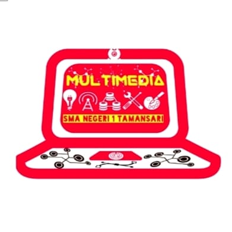

Sejarah Ekstrakurikuler Multimedia Club
Ditulis oleh Rizki Agung Sentosa 3/12/2024.
Ekstrakurikuler Multimedia Club didirikan pada 23 Oktober 2017 dengan Rizki Agung sebagai ketua umum pertama. Awalnya, Multimedia hanya sebuah kelompok kecil yang berisi siswa berbakat di bidang teknologi dan kreativitas. Kelompok ini bermimpi suatu hari nanti dapat menjadi ekstrakurikuler resmi yang membantu pengembangan IPTEK di sekolah.
Di awal berdirinya, kelompok ini rutin berkumpul untuk menghasilkan ide-ide kreatif yang bertujuan mewujudkan Multimedia menjadi sebuah ekstrakurikuler. Dalam setiap pertemuan, laptop selalu menjadi alat utama untuk mencatat dan mengembangkan ide-ide, seperti pembuatan trailer film dan aplikasi sekolah yang berguna bagi siswa SMA Negeri 1 Tamansari.
Kelompok ini terus berusaha keras mewujudkan impian tersebut meskipun menemui banyak tantangan. Persiapan yang dilakukan meliputi penyusunan kepengurusan, pencarian pembina yang tepat, dan perumusan visi serta misi organisasi. Semua usaha ini akhirnya membuahkan hasil, dan Multimedia resmi menjadi ekstrakurikuler pada 23 Oktober 2017 setelah melakukan presentasi di hadapan pihak sekolah.
Visi dan Misi
Visi :
Menyiapkan siswa yang memiliki pengetahuan dan keterampilan di bidang informatika sesuai dengan perkembangan IPTEK, serta berkepribadian baik dan berakal sehat.
Misi :
- Menyelenggarakan pendidikan dan kegiatan ekstrakurikuler Multimedia yang berkualitas tinggi.
- Mempromosikan kegiatan berbasis teknologi yang berlandaskan etika, kemandirian, dan kreativitas.
- Mengapresiasi hasil karya anggota dan memberikan motivasi untuk terus maju dalam bidang IPTEK.
- Memberikan pelayanan terbaik dalam pengaplikasian ilmu multimedia kepada siswa.
Sejarah Divisi
Divisi era awal
- Programming
- Editing
- Jurnalistik
- Sinematografi
Saat pertama kali Multimedia dibentuk terdiri dari 4 (empat) divisi seperti yang sudah disebutkan diatas, perubahan terjadi menyebabkan divisi dikurangi menjadi 3 divisi saja yang terdiri dari:
- Cinematography
- Editing
- Jurnalistik
sekarang multimedia menjadi 2 divisi saja, seperti berikut:
- Broadcasting (gabungan dari cinematography & editing)
- Programming
Perubahan-perubahan divisi ini terjadi karena menyesuaikan dengan minat para siswa/i di sekolah
Sejarah Prestasi
Sejak berdiri, Multimedia Club telah berpartisipasi dalam berbagai perlombaan dan menghasilkan karya yang membanggakan, di antaranya:
- Lomba FLS2N: Bagian Film dan Desain Poster.
- Lomba Komputer: STIE Kesatuan
- Lomba OSN Komputer: SMA Dwiwarna
- Lomba Robotik: SMANCIGO Cigombong dan IPB.
- Produksi Film: Figur Puan (2019) dan Bersenyawa (2019).
- Prestasi Film: Juara 1 FLS2N Film ("Gawang"), Juara 3 Dwiwarna Film Festival ("Lawankarsa"), Juara 1 Iklan Layanan Masyarakat Kemendikbud.
- Festival dan lomba seni siswa (FLS2N) 2024 cabang lomba film pendek.
- Festival Multimedia 2025, diselenggarakan oleh SMAN 1 Rumpin.
- Festival dan Lomba Seni dan Sastra Siswa (FLS3N) 2025 cabang lomba film pendek.
Struktur Kepengurusan
Struktur Kepengurusan Awal Kepengurusan Pertama (2017):
- Pembina: Bu Gina
- Ketua: Rizki Agung Sentosa
- Wakil Ketua: Alhalim
- Sekretaris: Rembulan
- Bendahara: Denada
- Ketua Programmer: Reka Bayu
- Ketua Editing: M. Zidan
- Ketua Office: Zahwa
- Ketua Sinematografi: Yudis Maulana
Era Perjuangan hingga Kebangkitan
- 2017-2018: Masa perjuangan untuk mendapatkan pengakuan sebagai ekstrakurikuler.
- 2018-2019: Mulai aktif berkompetisi dan mendapatkan penghargaan
- 2019 Akhir-2022: Menghadapi tantangan besar, termasuk pandemi COVID-19 yang menghambat aktivitas.
- 2022-2024: Masa kebangkitan dan perkembangan kembali di bawah kepemimpinan generasi baru.
Fakta Menarik Multimedia Club
- Awalnya merupakan sebuah komunitas sebelum menjadi ekstrakurikuler resmi.
- Pendanaan awal bersifat mandiri.
- Logo ekskul berupa laptop, terinspirasi dari kebiasaan mencatat ide menggunakan laptop.
- Multimedia Club adalah ekstrakurikuler pertama di SMA Negeri 1 Tamansari yang berbasis IPTEK.
- Pernah menjadi ekskul dengan jumlah anggota terbanyak, yakni 118 orang pada tahun 2019.
Multimedia Club terus berkontribusi dalam memajukan IPTEK di sekolah, menjadi inspirasi, dan membuka peluang bagi generasi berikutnya untuk berkembang dalam dunia teknologi dan kreativitas.
Sejarah Logo

Unsur yang ada didalam logo ini yaitu: Creativity, memiliki keterampilan dan kreativitas yang luar biasa. Troble Solve, pemahaman mengenai dasar computer dan multimedia. Integration, saling memahami dan menciptakan komunikasi terbuka. Connection, bekerja sama untuk menyebar luaskan multimedia di sekolah. Brilliant, cerdas dalam memecahkan masalah. Keyboard, simbol jaringan diartikan sebagai interaksi yang kuat antar anggota yang akan membangun eskul multimedia semakin berkembang dan lebih baik dan juga berfokus pada 1 tujuan bersama. Webcam, simbol ini diartikan sebagai pengawasan kepada sekolah dan juga eskul multimedia agar segala aktivitas yang dilakukan tetap terjaga dengan baik sehingga mengantisipasi hal-hal yang tidak diinginkan. Connection Control, memberikan kemudahan kepada anggota eskul multimedia dalam mengakses keperluan digital seperti melakukan kegiatan pembelajaran eskul.

Logo MM telah mengalami perubahan dari masa ke masa untuk menyesuaikan perkembangan zaman dan identitas klub yang kini memiliki unsur initial MM dari kata Multi dan Media, bentuknya yang seperti angka delapan horizontal dan menggambarkan Infinity.